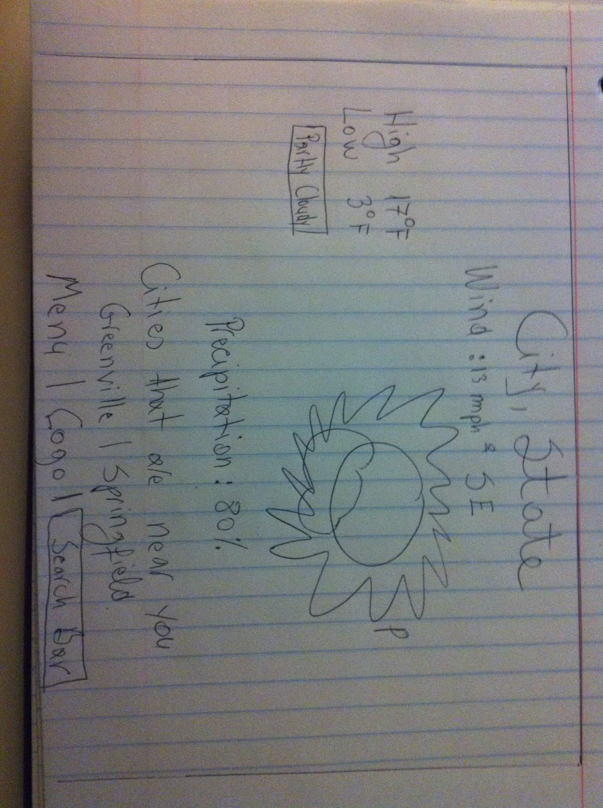

Weather Page - Initial Planning
Purpose Statement
The goal of this site is to provide accurate weather searvices that is up to date, and simple to use for all people.
Audience
This weather's site audience will be anyone that would like real-time, and updated weather informoation, from a college student, to someone driving their children to school. The age-range that visit the site would be from 11 to 75. We believ that our users will use their mobiles to access the site more often than desktop, laptop or any such.TIme of use would be mostly early in the morning before leaving to go somewhere or late at night, to check the weather for the day to come
The Wireframes

Persona

- Wayn West
- Math Professor
- 39 years old
- Married
- Has a doctorate in Advanced Mathematics
Wayn is a driven, goal oriented person that has taught since he gratuated, and has since been accepted to teach in prestigious schools around the world. He has about 40 minutes to commute in his car to where he teaches. The environment for him is either at his office or driving to go to work.
Peer Review
Review by James Warner.I really think you have made a good layout! I like how you put the temperature in the middle and big font, because thats the first thing that people want to know.